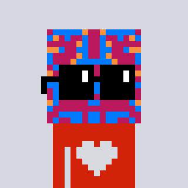

joshcrites.com
You are a manifestation of the divine
embodied in flesh
whose purpose is unique transformation of the cosmos into
creative expressions of love.
This is not just an abstract spiritual statement. It points to a seminal perspective about the relationship between
self and world,
perception and expression,
choice and causality.
→ Become a YourLand App Tester

About
I am a dreamer with a passion for learning. I am optimistic about social technologies that empower individuals, particularly cryptography and peer to peer networks.
Seeking high potential realities.
Projects
Here are a few of my software-related projects:
-
I currently leading the developer relations team at Aztec Labs.
-
You can read more about some of what I've learned about developer relations here.
-
I'm also working on Bank of JubJub, an on-chain, private transfer application using zk-snarks and homomorphic encryption.
-
A privacy suite for ERC20 tokens including sealed bid auctions, private crowd funding and private token voting, an Eth Denver 2024 hackathon project. Cant see past my shades.
-
I made Nounish Blockies, a generative NFT project on Ethereum.
Contact
Email me at
jc@joshcrites.com or find me on
X or
Farcaster.
Books
Some of my favorite books:
"We the Cypherpunks are dedicated to building anonymous systems. We are defending our privacy with cryptography, with anonymous mail forwarding systems, with digital signatures, and with electronic money."
Eric Hughes, A Cypherpunk's Manifesto